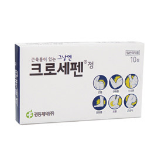
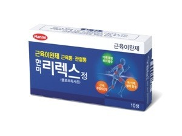
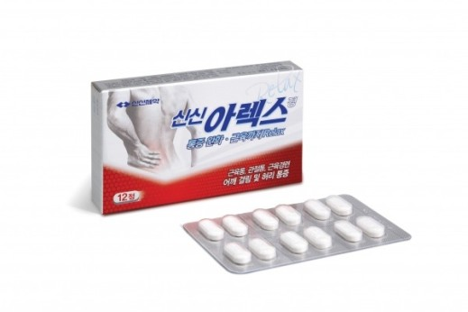
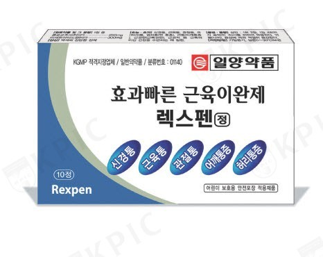
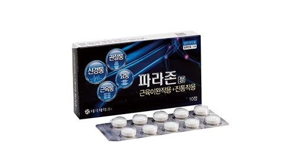

| 약 이미지 | 약 이름 | 약 성분 | 약 주요 효능,효과 | 약 가격 |
|---|---|---|---|---|
|  | 크로세펜정 | 아세트아미노펜, 클로르족사존 | - 신경통, 근육통, 관절통, 요(허리)통, 염좌통(삔 통증), 견통(어깨결림), 근경련(근육경련), - 근경직등 근육의 이상 긴장을 수반하는 제질환(여러 질환)의 통증과 근육을 풀어준다. - 클로르족사존에 과민증 환자, 아세트아미노펜에 과민증 환자, 심한 간,신장애(신장장애) 환자는 섭취하면 안된다. |
3,000원 |
|  | 한미리렉스정 | 이부프로펜, 메타규산알루민산마그네슘 | 근골격계 질환에 수반하는 동통(통증)성 연축(수축과 이완): 요배통증(허리, 등 통증), 경견완증후군(목, 어깨, 팔 증후군), 견관절(어깨관절)주위염, 변형성 척추증에 사용한다 |
4,000원 |
|  | 신신아렉스정 | 아세트아미노펜, 클로르족사존 | - 신경통, 근육통, 관절통, 요(허리)통, 염좌통(삔 통증), 견통(어깨결림, 어깨통증), 근경련(근육경련), 근경직(굳음)등 근육의 이상 긴장을 수반하는 제질환(여러 질환)에 사용한다. - 매일 세잔 이상 정기적으로 술을 마시는 사람이 이 약이나 다른 해열진통제를 복용해야 할 경우 반드시 의사 또는 약사와 상의 해야 한다. |
3,000원 |
| 셀라펜정 | 아세트아미노펜, 클로르족사존 | -신경통, 근육통, 관절통, 요(허리)통, 염좌(삠)통, 견통(어깨결림), 근경련(근육경련), 근경직 등 근육의 이상 긴장을 수반하는 제질환(여러 질환) - 성인 : 1회2정, 1일4회까지 공복시를 피하여 복용한다. 연령,증상에 따라 적절히 증감한다. |
3,500원 | |
|  | 렉스펜정 | 아세트아미노펜, 클로르족사존 | - 신경통, 근육통, 관절통, 요(허리)통, 염좌통(삔 통증), 견통(어깨통증), 근경련(근육경련), 근경직 등 근육의 이상 긴장을 수반하는 제 질환. - 성인 : 1회 2정, 1일 4회까지 공복(빈 속)시를 피하여 복용한다. 연령(나이), 증상에 따라 적절히 증감한다 |
4,000원 |
|  | 파라존정 | 아세트아미노펜, 클로르족사존 | - 신경통, 근육동, 관절통, 요통, 염좌통, 견통, 근경련, 근경직등 근육의 이상 긴장을 수반하는 제 질환 - 성인 : 1회2정, 1일4회까지 공복시를 피하여 복용하고, 연령, 증상에 따라 적절히 증감한다. |
3,000원 |